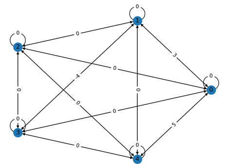
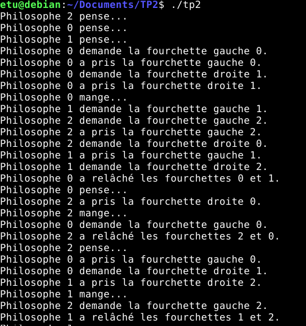
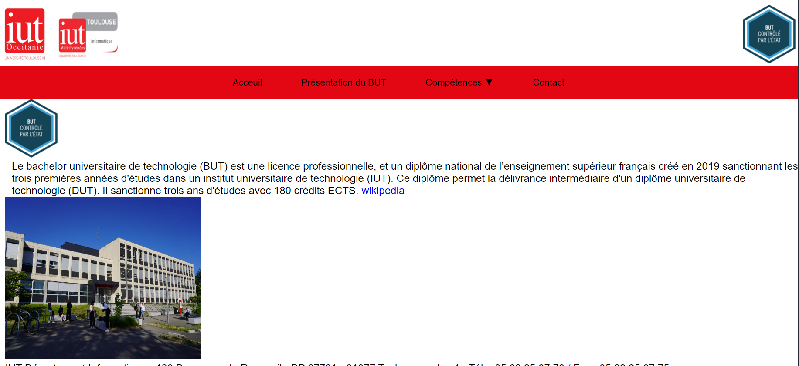

Mes Projets

Algorithme_Djikstra
L'algorithme de Dijkstra est un outil informatique qui permet de trouver le chemin
le plus court entre deux points dans un réseau, comme un réseau routier.
Langage utilisé : Python.

Takuzu
Ce code écrit en Ada permet la résolution automatique de grilles de Takuzu.
Langage utilisé : Ada.

Cabinet Médical
Mini-projet d'un site de gestion d'un cabinet médiacal.
Langages utilisés: PHP, HTML, CSS, SQL.

Synchronisation des threads
Ces programmes en C permet de coordonner différentes tâches qui s'exécutent en même temps.
En utilisant différente technique selon les besoins.
Langage utilisé : C.

Reproduction site web de l'iut
1er Mini-projet en HTML, amélioration de l'interface du site de l'iut.
Langage utilisé : HTML, CSS.
Mes Compétences
Réseau
Conteneurisation, virtualisation, automatisation, sécurité des applications, infrastructure d’un réseau
Programmation
HTML, CSS, PHP, MySQL, Python, JavaScript, Spring Boot
Systèmes d’exploitation
Linux, Windows